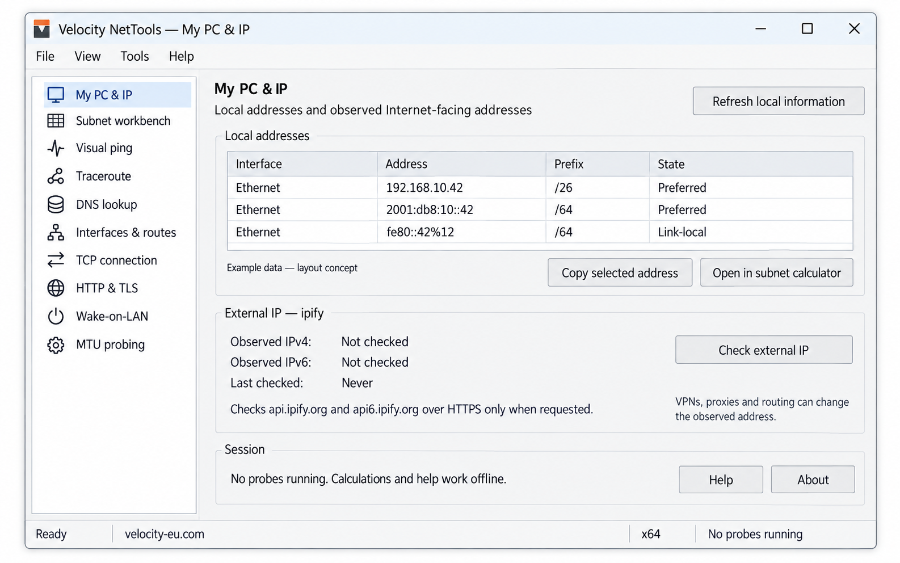

A practical companion for network engineers
Know the network.
Understand the numbers.
A portable Windows toolkit and a field guide for the work behind it. Explore the app, learn the maths, and follow calculations step by step.
Windows x64 · In design · First executable not yet released

Download Velocity NetTools
No executable is available yet. Official builds will be published on GitHub Releases.
One portable toolkit. The whole network picture.
Planned for the native Windows app: local and external IP, subnet planning, visual ping, traceroute, DNS, interfaces and routes, TCP checks, HTTP/TLS, Wake-on-LAN and MTU probing.
{kind=link}
Learn. Work it out. Check it.
Choose a topic or search for the detail you need. Browse the complete manual.
Getting started · Local and external IP · Subnetting and VLSM · Ping and traceroute · DNS · Interfaces and routes · TCP · HTTP/TLS · Wake-on-LAN · MTU · Errors · Keyboard shortcuts · Exports · Portability
The numbers
worth keeping close.
For conventional IPv4 subnets, subtract two from the total address count. The /31 and /32 exceptions are shown explicitly.
| Prefix | Subnet mask | Addresses | Usable hosts |
|---|---|---|---|
| /16 | 255.255.0.0 | 65,536 | 65,534 |
| /20 | 255.255.240.0 | 4,096 | 4,094 |
| /23 | 255.255.254.0 | 512 | 510 |
| /24 | 255.255.255.0 | 256 | 254 |
| /25 | 255.255.255.128 | 128 | 126 |
| /26 | 255.255.255.192 | 64 | 62 |
| /27 | 255.255.255.224 | 32 | 30 |
| /28 | 255.255.255.240 | 16 | 14 |
| /29 | 255.255.255.248 | 8 | 6 |
| /30 | 255.255.255.252 | 4 | 2 |
| /31 | 255.255.255.254 | 2 | 2 on point-to-point links |
| /32 | 255.255.255.255 | 1 | 1 address / host route |
Check your understanding
Your turn.
Find the network.
Take 192.168.5.77/27. Which network contains this address?
Hint: 5 host bits give 32 addresses per block.
Go to the source.
Keep the explanation simple. Keep the references authoritative.
A companion on the job.
These lessons will also inform the searchable, offline help in the planned Velocity NetTools Windows app. The executable will include context help, examples and a complete command reference.
No executable is available yet. When the first release is ready, its download and release notes will be published on GitHub.